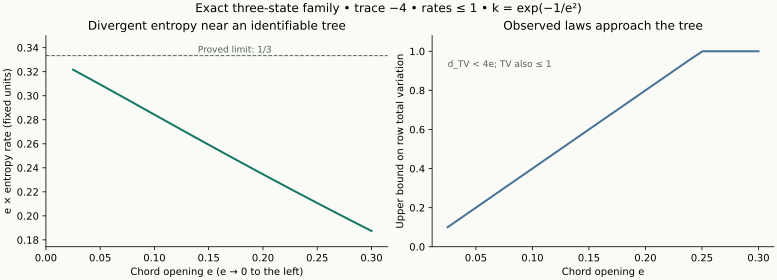

One exact slice of the inverse problem
The diagram classifies entropy sets. It does not represent a continuous bounded interval.
GENERATOR FIBER
SAME EXACT OBSERVATIONΨ(t), all t ≥ 0Known resolved x↔y; at most 5 states
ENTROPY IDENTIFIED SET
Schematic fiber geometry. z* is defined by the unique positive quartic root; selecting the endpoint uses the exact theorem case, not a floating-point equality test.

Quantitative illustration of a proved limit · 100-digit values and provenance · Generation script. The bound shown is min(1,4e); a plot is not the divergence proof.
DefinitionsAssumptionsResultsChecksPrior workFailuresOpen / riskColor = scientific role. The written badge = evidence status. No formal project proof is claimed.